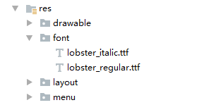
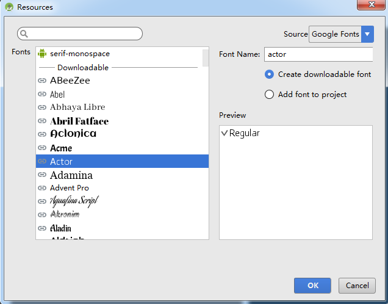

Android Studio 3.0 Device File Explorer & Fonts
Device File Explorer
使用设备的文件系统，可按如下的操作方式：
-
点击View > Tool Windows > Device File Explorer或者点击右下角位于工具窗口条中的Device File Explorer按钮来打开Device File Explorer。
-
从上方的下拉列表中选择设备。
-
在文件浏览窗口中操作设备文件。鼠标右键点击文件或目录来创建一个新文件或目录，保存现在的文件或目录到电脑中，上传、删除或同步文件。鼠标双击文件可以在Android Studio中打开文件。
注意：Android Studio 将用 Device File Explorer 打开的文件保存在工程外的临时目录中，如果在 Device File Explorer 中修改文件，并想把修改保存到设备中，需要手动将修改的文件上传到设备中。
Figure1 Device File Explorer窗口
当浏览设备文件时，以下2个目录是经常访问的：
data/data/app_name/：包含存储于内部存储空间的应用数据文件
sdcard/：包含存储于外部存储空间的用户文件
注意：不是所有的文件都在Device File Explorer中可见。例如在**data/data/**目录中，非debuggable应用的文件是不能展开的。
XML Fonts & Downloadable Fonts
Android O 引入了XML字体新特性，可以将字体作为资源使用。
XML Fonts
Android O 可以通过将字体文件加入res/font目录来将字体作为资源使用。这些字体会被编译到R文件中，并在 Android Studio 中可用。可以通过新的资源类型font来访问字体资源，例如用@font/myfont或者R.font.myfont来访问一个字体资源。
在 Android Studio 中可以通过执行以下步骤来字体资源：
-
鼠标右键点击res目录，选择New > Android Resource Directory，打开New Resource Directory窗口。
-
在Resource type列表里选择font，然后点击OK。
Figure2 添加字体目录 -
添加字体文件到font目录中。

Figure3 添加字体文件到资源目录 -
双击字体文件预览字体。
Figure4 预览字体文件
创建 font family
font family 是一个包含多个字体文件以及它们的style和weight信息的xml文件，font family 可以作为一个单元来访问。
通过以下步骤在 Android Studio 中创建一个 font family：
-
鼠标右键点击font目录，选择New > Font resource file，打开New Resource File窗口。
-
输入文件名，然后点击OK，一个新的字体资源xml文件将被打开在编辑器中。
-
给
<font>元素加入字体文件、style和weight等属性。下面是添加了字体相关属性后的字体资源xml的例子：
<?xml version="1.0" encoding="utf-8"?>
<font-family xmlns:android="http://schemas.android.com/apk/res/android">
<font
android:fontStyle="normal"
android:fontWeight="400"
android:font="@font/lobster_regular" />
<font
android:fontStyle="italic"
android:fontWeight="400"
android:font="@font/lobster_italic" />
</font-family>
在 xml layouts 中使用字体
可以通过fontFamily属性将单个字体文件或 font family 中的字体绑定到TextView。
注意：当使用 font family 时，
TextView将自动根据需要从 font family 中选择字体文件。
给TextView设置字体可以用如下任一方式：
- 打开 layout xml 文件，给
fontFamily属性设置字体文件。
<TextView
android:layout_width="wrap_content"
android:layout_height="wrap_content"
android:fontFamily="@font/lobster"/>
- 在 layout 文件的 design 编辑器中选择
TextView打开属性窗口，展开textAppearance属性，从fontFamily列表中选择字体。
Figure5 在属性窗口中选择字体
Downloadable fonts
Android O 和 Android Support Library 26 引入了从provider请求字体的api，从而不需要集成字体文件到apk或者让apk下载字体文件。
使用 Downloadable Fonts 特性三种方式：
-
通过 Android Studio 和 Google Play Service
-
通过编码实现
-
通过 support library
通过 Android Studio 和 Google Play Services 使用 Downloadable Fonts
在 Android Studio 3.0 中，可以使用 Google Play Services 的 font provider 来给应用设置下载字体。
注意：使用 Google Fonts Provider 要求设备中的 Google Play Services 版本大于等于11。
-
在Layout Editor中选择一个
TextView，在打开的属性窗口中选择fontFamily > More Fonts，打开Resources窗口。
Figure6 使用 layout editor -
在Source下拉列表中选择Google Fonts。
-
在Fonts列表中选择一个字体。
-
选择Create downloadable font并点击OK。

Figure7 从 Resources 窗口中选择字体
Android Studio 会自动生成相应的 xml 文件。
Figure8 生成的字体 xml 文件
其他使用 Downloadable Fonts 的方式
通过编码实现和通过 support library 的方式不涉及 Android Studio 本身，可参考链接：Downloadable Fonts。